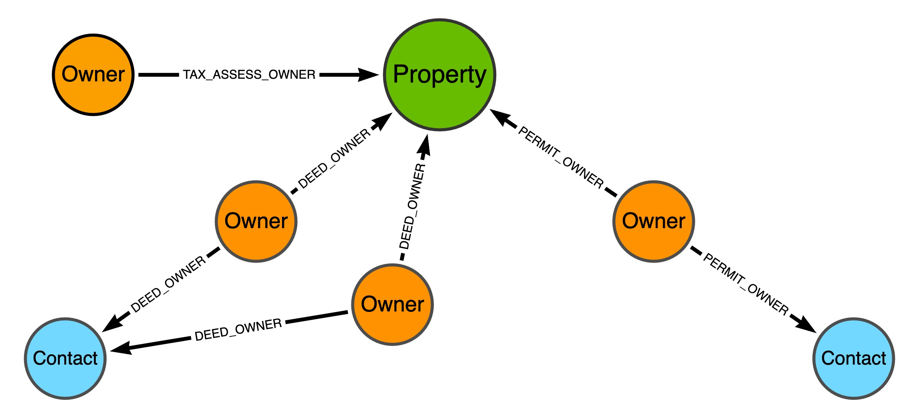
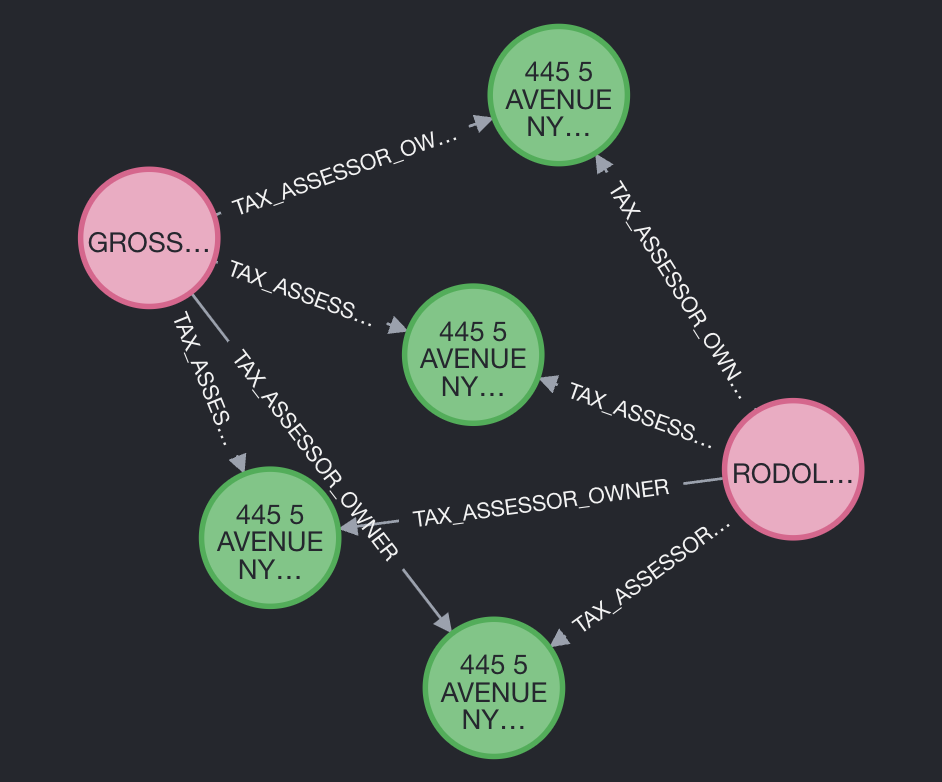
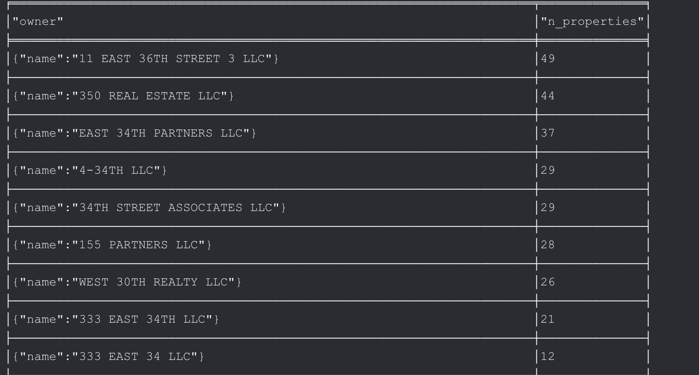
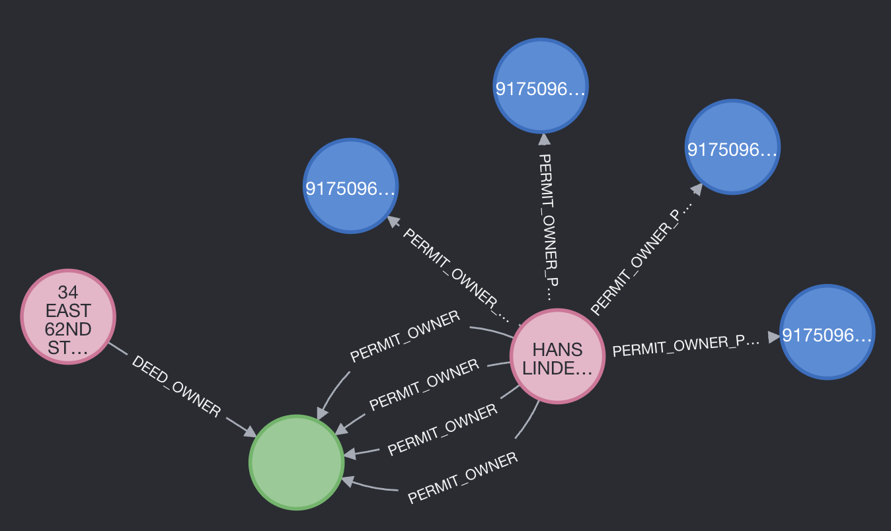
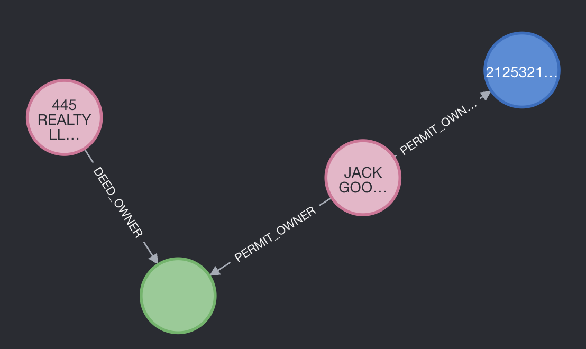

Finding property owners

Properties with many owners and owners with many properties
Properties with many owners
match (o:OWNER) - [r:TAX_ASSESSOR_OWNER] -> (b:BBL)
where o.name <> "UNAVAILABLE OWNER"
with b, count(r) as rel_count, collect(o) as o
where rel_count > 1
return b, oOwners with many properties
match (o:OWNER) - [r:TAX_ASSESSOR_OWNER] -> (b:BBL)
where o.name <> "UNAVAILABLE OWNER"
with o, count(r) as rel_count, collect(b) as b
where rel_count > 1
return b, o
Shortest path from LLC to Phones
Which LLC owns the most properties?
match (owner:OWNER) - [] ->(b:BBL)
with owner, count(b) as n_properties
where owner.name contains "LLC"
return owner, n_properties
order by n_properties desc
Find the shorted path between a LLC and a Phone node
match (o:OWNER), (p:PHONE), path = shortestPath((o)-[*]-(p))
where o.name CONTAINS "LLC" and length(path) < 5
return path
